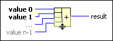

Compound Arithmetic Function
Owning Palette: Numeric VIs and Functions
Requires: Base Development System
Performs arithmetic on one or more numeric, array, cluster, or Boolean inputs. To select the operation (Add, Multiply, AND, OR, or XOR), right-click the function and select Change Mode from the shortcut menu. When you select this function from the Numeric palette, the default mode is Add. When you select this function from the Boolean palette, the default mode is OR.
The connector pane displays the default data types for this polymorphic function.

 Add to the block diagram Add to the block diagram |
 Find on the palette Find on the palette |